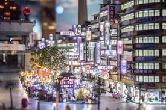

Japan Trip 🇯🇵
JK + wife + daughter
Thursday · March 12
Travel day. Depart San Francisco for Tokyo.
Outbound Flight
United UA 837
- Depart: 11:40 AM
- From: SFO, San Francisco, CA
- To: NRT, Tokyo, Japan
- Duration: 11h 20m
- Aircraft: Boeing 777-200
- Fare Class: United Economy (S)
- Seats: 32D, 32F, 32G
Arrival: Friday, March 13 at 3:00 PM Tokyo time.
Friday · March 13
Arrive in Tokyo, head to hotel, and check in.
Arrival
Tokyo Narita (NRT)
- Arrive: 3:00 PM
- Flight: United UA 837
Arrival Plan
Narita Airport → Hyatt Regency Tokyo
- Go through Immigration
- Pick up luggage at Baggage Claim
- Exit through Customs into Arrivals Hall
- Follow signs for Airport Limousine Bus
- Buy ticket to Hyatt Regency Tokyo (Shinjuku)
- Go to assigned bus stop
- Bus drops off directly at the hotel entrance
- Best option: Airport Limousine Bus
- Duration: ~90–120 minutes
- Cost: ~3,600 yen per adult
Get Directions
Hotel
Hyatt Regency Tokyo
Hotels.com itinerary: 73362373143409
- Check-in: Fri Mar 13 · 2:00 PM
- Check-out: Tue Mar 17 · 11:00 AM
- Stay: 4 nights
- Guests: 2 adults · 1 child
- Room: Deluxe Room · 1 King Bed · City View · Non-Smoking
- Reserved for: Jhanvi Dangaria
2-7-2 Nishi-Shinjuku, Shinjuku-ku, Tokyo 160-0023 Japan
Get Directions to Hotel
Saturday · March 14
First full day in Tokyo. Easy, fun, and not too exhausting.
Highlights

Meiji Shrine
Peaceful forest shrine and an easy first stop.

Harajuku / Takeshita Street
Fun snacks, crepes, candy, and lots of energy.

Shibuya Sky
Observation deck with big city views.
Day Plan
- 9:00 AM — Breakfast near hotel
- 10:00 AM — Walk hotel → Shinjuku Station West side / JR access
- 10:15 AM — Train Shinjuku → Harajuku
JR Yamanote Line · ~10 min
- 10:30 AM – 11:45 AM — Meiji Shrine
- 11:50 AM – 1:00 PM — Harajuku snacks on Takeshita Street
- 1:00 PM — Train Harajuku → Shibuya
JR Yamanote Line · ~2 min
- 1:15 PM – 2:00 PM — Shibuya Crossing + Hachiko
- 2:15 PM – 3:15 PM — Shibuya Sky
- 3:30 PM — Train Shibuya → Shinjuku
JR Yamanote Line · ~10 min
- 4:00 PM – 6:00 PM — Rest at hotel
- 7:00 PM — Dinner in Shinjuku
Shibuya Sky
Observation deck above Shibuya Crossing
- Recommended time: 2:15 PM
- Buy timed-entry tickets in advance
- Typical wait: 10–20 minutes
Buy Tickets
Get Directions
Sunday · March 15
Relaxed day: park walk, vegetarian lunch in Ginza, teamLab Planets, and optional Small Worlds.
Highlights

Shinjuku Gyoen Park
Peaceful morning walk in one of Tokyo’s most beautiful parks.

teamLab Planets
Immersive digital art museum with water rooms, light installations, and interactive exhibits.

Small Worlds Tokyo (Optional)
Miniature cities, moving trains, and tiny airports — fun stop if energy is still high.
Morning
- 9:30 AM — Leave hotel
- 9:40 – 11:00 AM — Walk around Shinjuku Gyoen National Garden
- Large beautiful park, great for a calm start to the day
Open Park in Google Maps
Travel to Lunch
- 11:10 AM — Walk to Shinjuku-gyoemmae Station
- 11:20 AM — Take Tokyo Metro Marunouchi Line
- Route: Shinjuku-gyoemmae → Ginza
- Travel time: ~15 minutes
- 11:40 AM — Walk ~6 minutes to restaurant
Lunch
Annam Indian Restaurant · Ginza
- 12:00 – 1:15 PM
- Vegetarian-friendly Indian cuisine
- Good dishes: vegetable curry, dal, naan
- Relaxed sit-down lunch before teamLab
Directions to Restaurant
Travel to teamLab
- 1:20 PM — Walk to Ginza Station
- 1:30 PM — Take Tokyo Metro Ginza Line
- Route: Ginza → Shimbashi (1 stop)
- 1:40 PM — Transfer to Yurikamome Line
- Route: Shimbashi → Shin-Toyosu
- Travel time: ~25 minutes
- 2:05 PM — Walk 1–2 minutes to teamLab
- 2:10 – 2:45 PM — Buffer time / snacks / line up early
teamLab Planets
- Entry window: 3:00 – 3:30 PM
- Estimated visit: 90–120 minutes
- Walk barefoot through immersive digital art rooms
Open Tickets / QR Code
Optional After teamLab
Small Worlds Tokyo
- Miniature cities, trains, and airports
- Great with kids
- Visit if everyone still has energy
- 5:10 PM — Train from Shin-Toyosu
- Take Yurikamome Line to Ariake-Tennis-no-Mori
- Travel time: ~6 minutes
- Walk ~3 minutes
- Visit: 45–60 minutes
Directions

Return to Hotel
- From Shin-Toyosu or Ariake-Tennis-no-Mori
- Take Yurikamome Line → Shimbashi
- Transfer to JR Yamanote Line
- Route: Shimbashi → Shinjuku
- Travel time: ~30 minutes
- Walk ~10 minutes back to hotel
Monday · March 16
March 16 travel details here
Tuesday · March 17
March 17 travel details here
Wednesday · March 18
March 18 travel details here
Thursday · March 19
March 19 travel details here
Friday · March 20
March 20 travel details here
Saturday · March 21
March 21 travel details here
Sunday · March 22
Travel home from Tokyo to San Francisco.
Return Flight
United UA 838
- Depart: 4:45 PM
- From: NRT, Tokyo, Japan
- Arrive: 10:15 AM
- To: SFO, San Francisco, CA
- Duration: 9h 30m
- Aircraft: Boeing 777-200
- Fare Class: United Economy (S)
- Seats: 34J, 34K, 34L